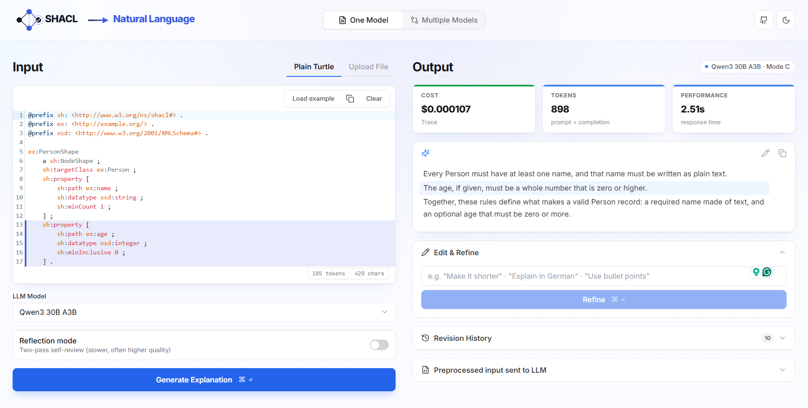
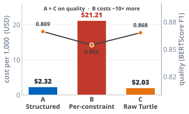
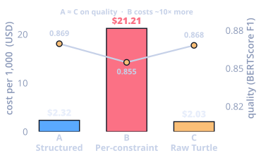
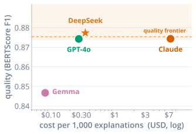
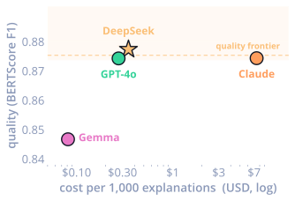
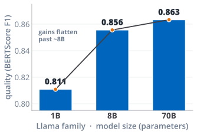
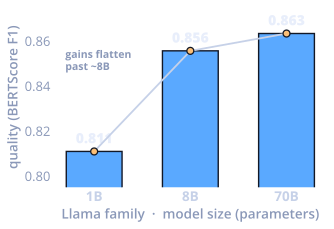
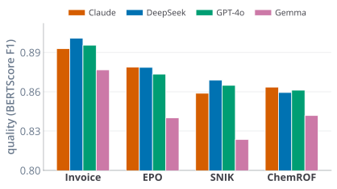
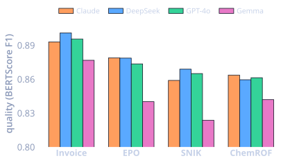

Paste a SHACL constraint shape, pick a model, and get a clear plain-English explanation in seconds. Compare models side by side: quality, cost and speed, all in one view.
Constraint shapes define what constitutes valid data, but their Turtle syntax is difficult for non-technical users to interpret. We therefore translate each constraint into a natural-language sentence that domain experts can verify at a glance.
Every Person must have at least one name, and that name must be plain text.
The age, if provided, must be a whole number that is 0 or greater.
Together these rules define a valid Person record: a required name and an optional age that cannot be negative.
The actual interface, replayed below: type a shape, choose a model and strategy, generate. Cost, tokens, and latency are tracked live, and the explanation streams in as it is written.
Pick a model and a prompt strategy, then hover the explanation to see which SHACL lines each paragraph refers to.
A walkthrough of the interface, from input handling to model choice to side-by-side comparison.
Drop in Turtle directly, or drag & drop .ttl / .rdf files. Syntax highlighting via CodeMirror, with load-example and clear shortcuts.
Switch between Llama, Gemma, DeepSeek, Qwen, GPT-4o mini and Claude through OpenRouter, in one click.
ModelsStructured (Mode A), fine-grained per-constraint (Mode B), or raw-Turtle baseline (Mode C), each tuned for a different trade-off.
StrategyAn optional two-pass self-review where the model critiques and refines its own draft for higher-quality output.
QualityAsk for follow-up edits in natural language (shorten it, simplify it, change the tone) without starting over.
IterateRun the same shape across 2-3 models at once and see explanation, cost, tokens and latency side by side, with per-metric winners highlighted.
CompareEvery generation and refinement is kept and grouped per run, so you can step back through earlier versions any time.
HistoryA running token counter, per-call cost and latency, so the price and performance of every model are always visible.
MetricsPolished light and dark modes with ambient backgrounds, an in-editor toolbar, and empty-state guidance throughout.
PolishPaste a shape on the left, configure on the bottom, and read the explanation on the right, with cost, token and latency cards above.

Run one shape through two or three models in a single pass and read the results side by side. Cost, tokens and latency are measured for each, and the best in class is flagged automatically.
Three models, one shape: a large cost gap (Claude vs GPT-4o mini) buys almost no quality difference.
The same SHACL goes in; the difference is how much structure we hand the model. We benchmarked all three on 456 explanations.
The shape is parsed into a clean Property / Rule / Value table before it ever reaches the model, so the LLM explains a tidy outline rather than raw syntax.
Each constraint is sent to the model individually and the pieces are stitched together. Thorough, but it sends far more tokens, so it costs the most.
Raw Turtle handed straight to the model. The simplest path, and it statistically ties the structured mode while staying the cheapest. Simplicity wins.
We ran 4 models across 3 strategies on 38 shapes from 4 domains, scored every explanation with BERTScore, ROUGE and BLEU, and cross-checked against 80 human ratings.
Structured (A) and raw-Turtle (C) prompting tie on quality (0.869 vs 0.868 BERTScore F1), while per-constraint (B) scores lower and costs about 10× more ($21.21 vs about $2 per 1,000 explanations). The simplest prompt wins.


An open $0.35 model (DeepSeek V3.2) sits right on the quality frontier, matching a $7.44 frontier model. Above a capability floor, paying more buys almost nothing.


Across one model family (Llama), BERTScore F1 climbs from 0.811 at 1B to 0.856 at 8B, but reaches only 0.863 at 70B. Gains flatten past about 8B, so a mid-sized model already captures most of the quality.


The same picture repeats on Invoice, EPO, SNIK and ChemROF: the frontier models cluster together and Gemma trails. Re-running each model three times moves the score by less than 0.002 F1, about 5× smaller than the gap between models.


BERTScore F1; cost per 1,000 explanations on raw-Turtle (Mode C) prompting. The full picture - all four models, three prompt strategies, the prompt-mode tie and the consistency checks - is in the repository.
The full source, the SHACL parser, the prompt strategies and the evaluation pipeline are all in the repository.